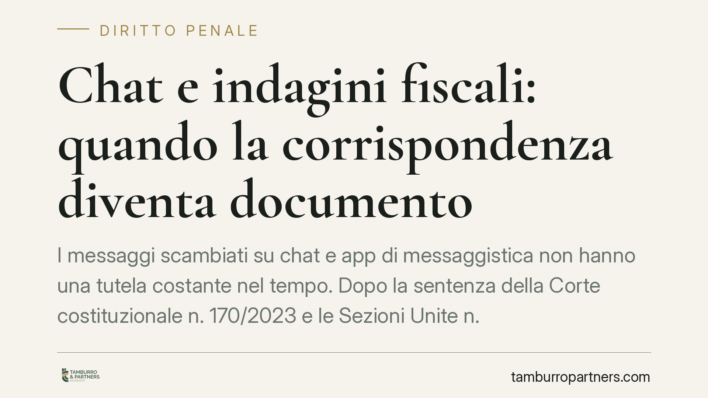

Chat e indagini fiscali: quando la corrispondenza diventa documento
I messaggi scambiati su chat e app di messaggistica non hanno una tutela costante nel tempo. Dopo la sentenza della Corte costituzionale n. 170/2023 e le Sezioni Unite n. 23756/2024, il quadro è chiaro: finché sono "corrispondenza" godono della protezione dell'art. 15 Cost., ma con il passare del tempo degradano a documento acquisibile con garanzie ridotte. Un dettaglio decisivo nelle indagini fiscali retrospettive.

Il fatto: una tutela che non è per sempre
Le chat sono ormai il cuore delle indagini penali, comprese quelle tributarie. Fatture false, operazioni inesistenti, occultamento di documenti contabili: molto passa da messaggi, note vocali, scambi su piattaforme di messaggistica.
Il punto giuridico è meno intuitivo di quanto sembri. La protezione riconosciuta a questi contenuti non è stabile. Dipende dal tempo trascorso dallo scambio. E nelle indagini fiscali, che spesso guardano indietro di anni, questo cambia tutto.
Inquadramento normativo
L'art. 15 della Costituzione tutela la libertà e la segretezza della corrispondenza e di ogni altra forma di comunicazione. La limitazione è ammessa solo con atto motivato dell'autorità giudiziaria e nelle garanzie stabilite dalla legge.
La Corte costituzionale, con la sentenza n. 170/2023, ha chiarito che anche i messaggi di posta elettronica e le chat costituiscono "corrispondenza" ai sensi dell'art. 15 Cost. Ne consegue che la loro acquisizione richiede un provvedimento dell'autorità giudiziaria, non un semplice atto della polizia giudiziaria.
Le Sezioni Unite della Cassazione, con la sentenza n. 23756/2024, hanno però introdotto un criterio temporale. La qualifica di "corrispondenza" — con la piena tutela dell'art. 15 Cost. — permane finché la comunicazione conserva un carattere di attualità e riservatezza legato al processo comunicativo in corso. Con il decorso del tempo, il messaggio perde questa dimensione e si trasforma in mero "documento" ex art. 234 c.p.p.: una traccia storica di un fatto, acquisibile con garanzie procedurali inferiori.
Questa distinzione incide direttamente sui reati tributari disciplinati dal D.lgs. 74/2000, dove la prova documentale è centrale.
Implicazioni pratiche
La conseguenza operativa è netta. Un messaggio scambiato di recente, ancora "vivo" nel suo contesto comunicativo, gode della tutela rafforzata: serve un provvedimento dell'autorità giudiziaria adeguatamente motivato per acquisirlo.
Un messaggio risalente nel tempo, invece, può essere trattato come documento. In questo caso la soglia di garanzia si abbassa: l'acquisizione segue le regole più permissive dell'art. 234 c.p.p.
Nelle indagini fiscali il problema è strutturale. Gli accertamenti guardano quasi sempre a esercizi passati. La Guardia di Finanza e la Procura si trovano spesso ad analizzare chat di due, tre, quattro anni prima. Secondo l'impostazione delle Sezioni Unite, molti di questi contenuti rischiano di essere qualificati come documento storico, con una tutela sensibilmente ridotta per l'indagato.
Resta aperta una zona grigia: quale sia il momento esatto in cui la corrispondenza "degrada" a documento. Il criterio non è cronologico in senso fisso, ma legato alla perdita di attualità del processo comunicativo. Una valutazione che dipende dal caso concreto e che, allo stato, offre margini di discussione difensiva.
Per l'imprenditore indagato questo significa che la modalità di acquisizione dei propri messaggi — e la sua legittimità — è un terreno di verifica tutt'altro che marginale. Un'acquisizione compiuta senza le garanzie richieste può incidere sull'utilizzabilità della prova.
Cosa fare in concreto
- Verificate il titolo di acquisizione. Controllate se le chat sono state acquisite con provvedimento dell'autorità giudiziaria o come semplice documento: la differenza pesa sull'utilizzabilità.
- Datate i messaggi. Ricostruite con precisione la collocazione temporale dei contenuti rilevanti, perché da questa dipende il regime di tutela applicabile.
- Contestate tempestivamente le acquisizioni irregolari. Le eccezioni di inutilizzabilità vanno sollevate nei tempi e nelle forme corrette, senza attendere fasi successive.
- Non cancellate nulla in autonomia. La distruzione di dati durante un procedimento può integrare condotte autonomamente rilevanti; consigliamo di rivolgersi a un difensore prima di qualsiasi intervento.
- Fatevi assistere nella fase iniziale. Le scelte fatte all'avvio delle indagini condizionano l'intera strategia difensiva.
La lezione è chiara: la protezione delle comunicazioni digitali esiste, ma ha un orizzonte temporale. Conoscere questo confine è il primo strumento di difesa.
---
*Contributo informativo a cura di Tamburro & Partners — Avv. Giuseppe Tamburro. Non costituisce parere legale.*
Ogni condominio ha una storia a sé.
Se gestisci un'amministrazione e vuoi un confronto su una specifica questione condominiale, scrivi allo studio. Ti rispondiamo entro un giorno lavorativo.